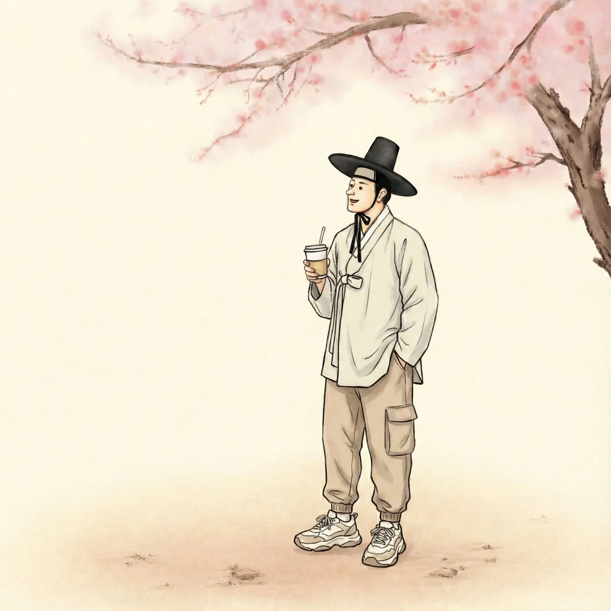
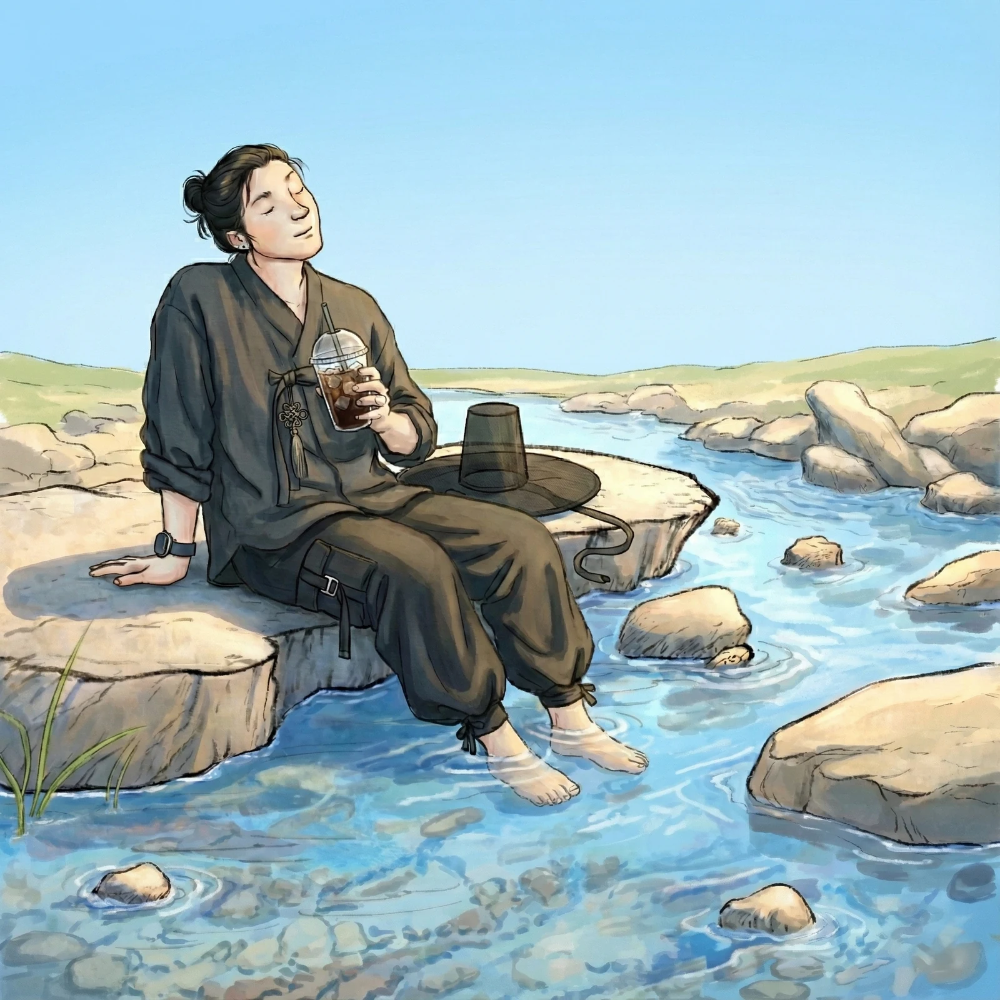
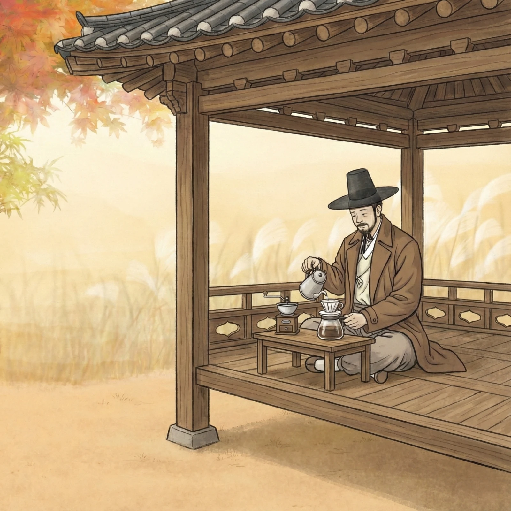
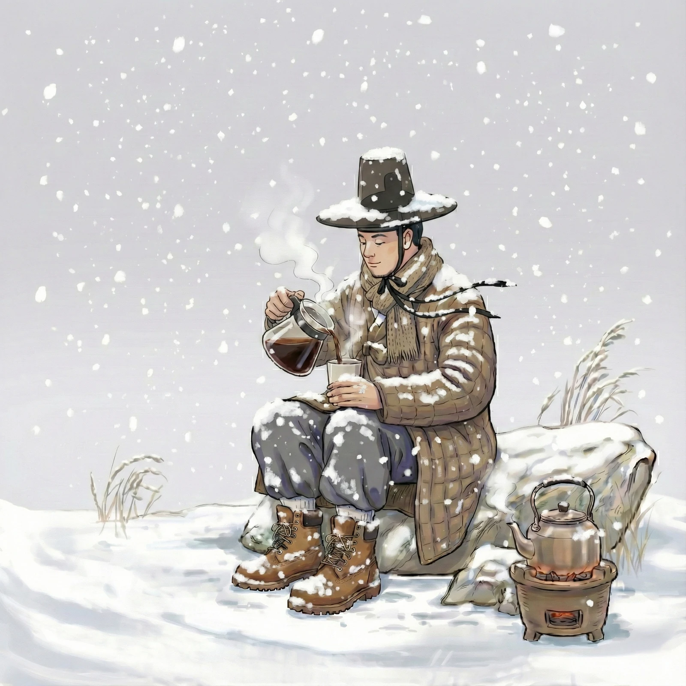

《마주온 커피, 2026》 — 인터랙티브 캔버스
스크롤을 내리세요
『마시는 것은 달라졌지만 즐기는 마음은 이어집니다』
마주온의 커피
옛 선조들이 차와 술을 곁에 두고 풍류를 즐겼듯,
마주온은 오늘 그 자리에 커피를 놓습니다.
한국의 사계와 풍류를 담은 네 가지 블렌드 커피.
사계를 펼치다
한국의 사계와 풍류를 담은 네 가지 블렌드 커피. 족자 속 여백과 함께 차분히 펼쳐보세요.
스크롤을 내리면 화담이 오른쪽으로 밀리며 다음 계절이 이어집니다

살구와 복숭아의 화사한 과실향 위로 라벤더와 로즈힙이 부드럽게 머뭅니다.
살구 · 복숭아 · 라벤더 · 로즈힙
SPRING · 01
라임과 청사과의 맑은 산미, 허브와 그린티의 투명한 여운이 깨끗하게 이어집니다.
라임 · 청사과 · 허브 · 그린티
SUMMER · 02
로스티 곡물과 흑설탕의 담백한 고소함 뒤로 은은한 스파이스가 깊이를 더합니다.
로스티 곡물 · 흑설탕 · 스파이스
AUTUMN · 03
차분한 허브와 스파이스, 무겁지 않은 바디가 겨울처럼 잔잔하고 길게 이어집니다.
허브 · 스파이스 · 맑은 바디 · 긴 여운
WINTER · 04